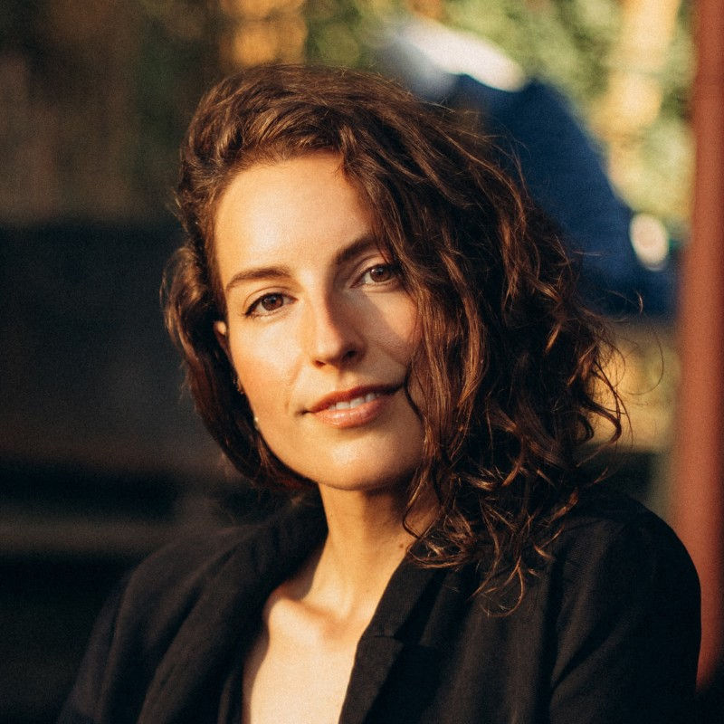

The hard part of AI is not building smarter models. It is making them work in the complexity of a real organisation. Ohyon is the Amsterdam-based consultancy of Ayala Ohyon, helping teams take AI from idea to production.
Clear advice on where AI fits your organisation: which use cases are worth the investment, what to build first, and what it takes to get it live.
Design and development of AI systems, from machine learning models to LLM applications, including the engineering needed to run them reliably in production.
I build with the latest AI-assisted development tools. It is how a one-person studio delivers at the pace of a small team, at a fraction of the cost.
Voice research for a text-to-speech application.
A visual AI tool that supports psychologists in their work with clients.

I'm Ayala Ohyon. I have spent the past nine years bringing AI into production: at Miro I led the data science teams behind Miro AI, at Thoughtworks I delivered AI projects for clients like Daimler and Mondelez, and at Schiphol Airport I built models for passenger flow and security planning. In 2025 I started Ohyon to do this work independently. Technical enough to build, strategic enough to scale, and curious enough to keep asking questions.
Want to talk through an idea? Email me at ayala@ohyon.nl or find me on LinkedIn.